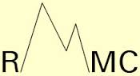
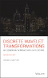

Patrick J Van Fleet
University of St. Thomas
Professor and Chair, Mathematics
Director, Center for Applied Mathematics
Welcome to my web page. Information is organized under the links on the right side of the page. In particular, the Wavelets Page has information about my books, software, and course materials.
Recent Publications
 Fractional Cone Splines and Hex Splines, with Peter Massopust, Rocky Mountain Journal of Mathematics,47, No. 5, 2017, 1655-1691.
Nonnegative Scaling Vectors on the Interval, with David Ruch, Axioms, 2, No. 3, 2013, 371-389.
Discrete Wavelet Transformations and Undergraduate Education, with Catherine Bénéteau, Notices of the America Mathematical Society, 58, Issue 05, May, 2011, 656-666.
Recent Books
 Discrete Wavelet Transformations: An Elementary Approach with Applications,2nd Edition, John J Wiley & Sons, Inc., Hoboken, NJ, April 2019.
Wavelet Theory: An Elementary Approach with Applications, with David Ruch, John J Wiley & Sons, Inc., Hoboken, NJ, November 2009.